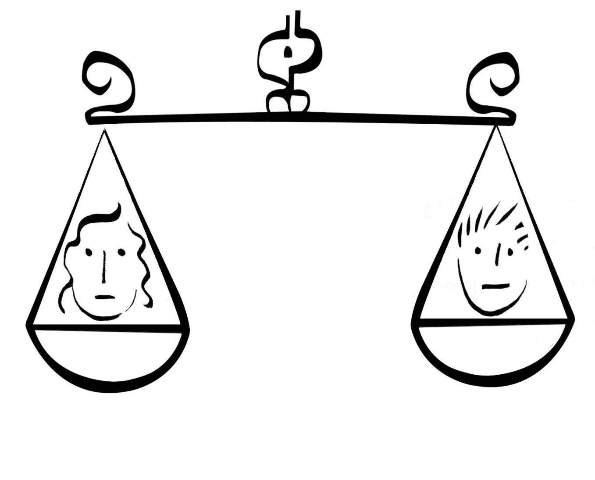

|
|
|
Browsing
Contact Us |
Campaigners |
Face to Face |
Tribune |
Interview |
News |
On the Web |
One Million |
Report
Farsi | Français | German | Italian | Spanish | العربية Also in this section
|
 Fatemeh Nejati A Big LessonTranslated by Leila Shirnejad Irani Tuesday 20 February 2007 Long before the start of the “One Million Signature” campaign, I was frustrated with the difficult plight of women and I wished from the bottom of my heart for these unfair laws against women to change. In gatherings and various get-togethers, I would broach the topic of the problems that women face today, but there were times when I would lose the motivation for discussions and arguments. It was as if, I was devoid of hope. In fact, prior to working with the campaign, I would only speak with specific people such as close friends and some family members, and I would generally avoid bringing up the topic of women’s difficulties in larger groups or in the presence of strangers. Sometimes I would be ashamed. Low self esteem and not knowing all the facts would cause me to stop short of mentioning women’s issues and I would allow the social gathering to go about its traditional routine. However, since joining the campaign, I slowly began to feel a sense of conviction and responsibility in articulating the pain and difficulties of women, and my self confidence in discussing these issues in social gatherings grew, especially in the presence of my family elders. In a way, answering people’s questions about the various details of the laws made me even more aware of feminism and the situation of the women in my country. More importantly, I knew that I was not alone. Knowing that many unacquainted friends of the campaign in Tehran and other parts of Iran were busy collecting signatures gave me a good feeling. No longer feeling alone in this small city gave me a sense of support and hope. Being a member of the campaign gave me a new sense of identity. A personal experience But the experience that I want to tell is in regards to one of my closest family members, my father. My father is a very kind, sincere, religious and pious human being. At the same time he is drawn to knowledge, reflection and logic as well. At first, he would try to answer my criticisms of the status quo laws with kindly advising me not to seek the reasons and causes for these historic injustices and discrimination between men and women. He would say “Probably there is some wisdom embedded in the unequal laws that I have not found, and for this reason I should study more.” Due to this rationale, my father was against changing the laws. I listened to my father, so with much persistence and diligence I researched the literature, but the more I studied, the deeper my convictions became that the laws were discriminatory and unjust. With all this, a subconscious fear grew in me. What if my patient father, who has spent his life in promoting science and religion and has no expectations from anyone or any rankings, was to become offended and take away his kindness from me. Because of this, I stopped the discussing this topic with him, but I kept up on my research. After joining the campaign and battling with myself, I broached the subject of the movement and its goals with friends and neighbors. All the while I was afraid of worrying my father. From the corner of my eye, I kept watching for his reactions. Talking of the campaign among family and friends resulted in a variety of questions regarding the validity of its goals (questions that rarely come up when talking with other activists.) Of course, I defended the woman’s rights movement of my country as well as the inalienable rights of Muslim women with strong reasons and I explained that the current laws are creating many problems for women. I also described the positive new movements in other Islamic countries that were attempting to correct their own discriminatory laws. Since I believe that Islam is a religion that defends justice and equality, at least that is what my father taught me, why should Muslim women be quiet in the face of injustice? Are we less deserving than other women? Since we are Muslims, does this mean we should be without rights? These questions continued for some time and I noticed my father carefully monitoring my answers. Days and weeks passed by in similar fashion until I gradually felt that the clouds of sadness and worry were starting to lift from my father’s kind and compassionate face. Little by little, he developed a smile of support for me and my fellow campaigners. Finally, one day while signatures were being collected from various friends and family, my father asked to sign and be part of the campaign as well. That night, I cried tears of joy. The relief I felt made me lighter, as if I could fly. For some time I felt that my dear father was distancing himself from me and I thought that I was going down a path that he disapproved of. His becoming part of the campaign brought us closer. I was so happy. Yes, I have learned a big lesson that change takes time and I have to be more patient. I have realized that influencing other people’s beliefs and opinions takes time and doesn’t happen over night! What is interesting is that my father is now very persistent in wanting to collect signatures from friends and co-workers. I have witnessed many of his arguments and discussions in the effort to convince his friends for the need for women’s rights, as well as the need to interpret religion based on changing times. I get unbelievable energy from him and I bask in the happiness this brings me. |